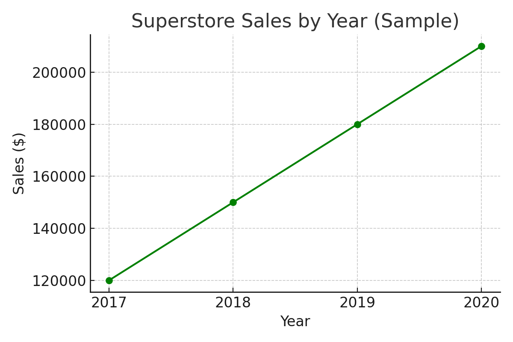
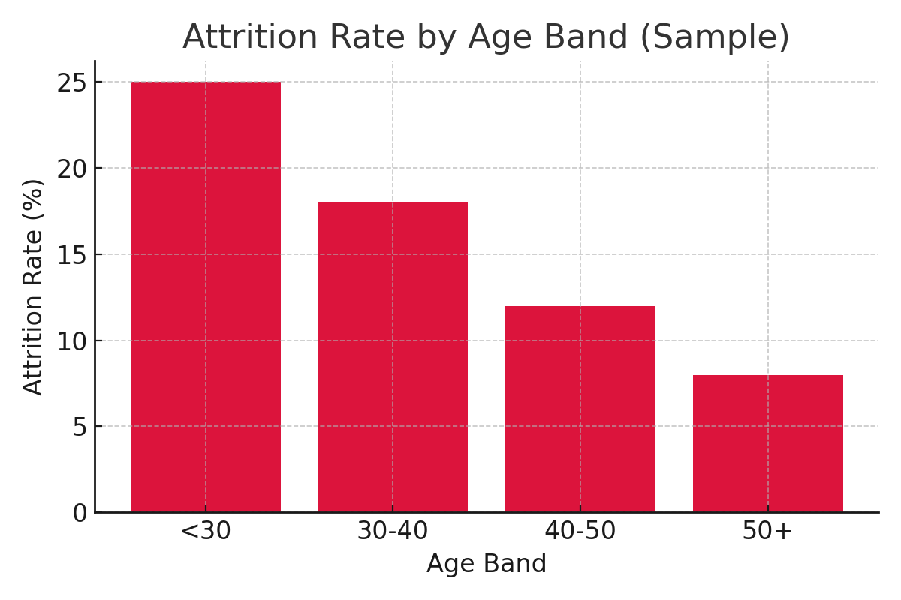

📉 Customer Churn Analysis
SQL-driven telecom churn case study. Extracted key metrics, identified high-risk customer groups, and built retention insights from 7,000+ records.
📊 Superstore Sales Analysis
SQL + Python analysis of Superstore dataset. Sales & profit by category, regional performance, top customers, and shipping mode profitability with matplotlib charts.

🎵 Music Store Analysis
Advanced SQL joins, CTEs, and window functions on the Chinook DB. Analyzed top artists, revenue by genre, customer lifetime value, and monthly revenue trends.
👥 HR Attrition Analysis
SQL + Python EDA project analyzing IBM HR dataset. Explored attrition by department, age band, salary levels, and tenure with actionable business insights.